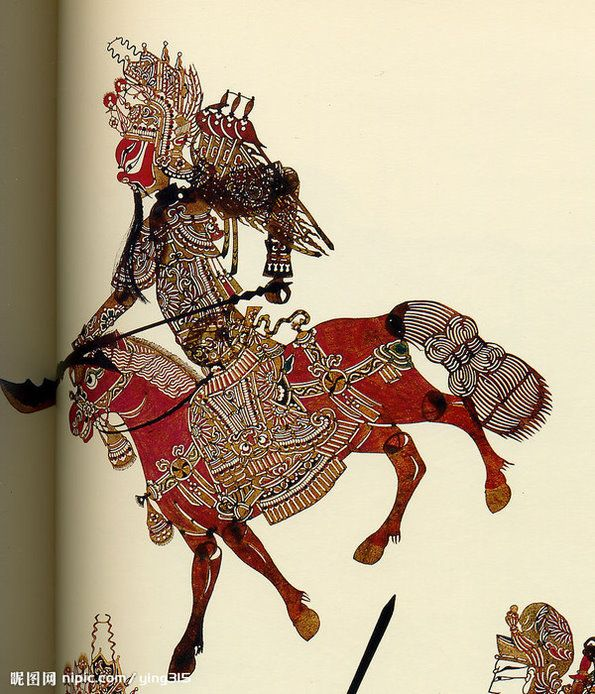
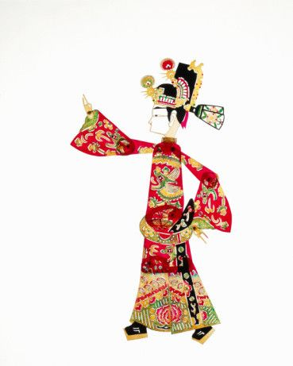
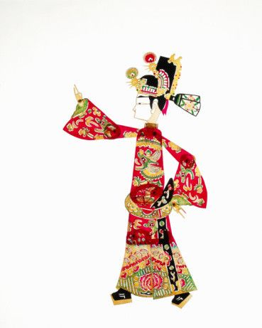

皮影戏(Shadow Puppets)，又称“影子戏”或“灯影戏”，是一种以兽皮或纸板做成的人物剪影以表演故事的民间戏剧。表演时，艺人们在白色幕布后面，一边操纵影人，一边用当地流行的曲调讲述故事，同时配以打击乐器和弦乐，有浓厚的乡土气息。其流行范围极为广泛，并因各地所演的声腔不同而形成多种多样的皮影戏。
皮影是中国民间广为流传的道具戏之一，通过灯光把雕刻精巧的皮影戏映照在屏幕上，由艺人们在幕后操动影人，伴以音乐和歌唱，是一种深受人民欢迎的古老而又奇特的戏曲艺术。皮影萌芽于汉，发展于唐，兴盛在宋朝。陕西皮影不仅唱腔种类繁多，表演技术高超，而且影人的雕刻技艺也达到了很高的水平。传统剧有《会阵招亲》《游西湖》等。皮影戏是中国民间古老的传统艺术，老北京人都叫它“驴皮影”。据史书记载，皮影戏始于西汉，兴于唐朝，盛于清代，元代时期传至西亚和欧洲，可谓历史悠久，源远流长。
皮影是中国民间广为流传的道具戏之一，通过灯光把雕刻精巧的皮影戏映照在屏幕上，由艺人们在幕后操动影人，伴以音乐和歌唱，是一种深受人民欢迎的古老而又奇特的戏曲艺术。皮影萌芽于汉，发展于唐，兴盛在宋朝。陕西皮影不仅唱腔种类繁多，表演技术高超，而且影人的雕刻技艺也达到了很高的水平。传统剧有《会阵招亲》《游西湖》等。
2011年，中国皮影戏入选人类非物质文化遗产代表作名录。
2018年12月，教育部办公厅关于公布上海戏剧学院为皮影戏中华优秀传统文化传承基地